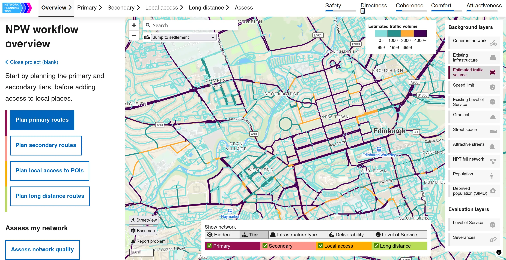
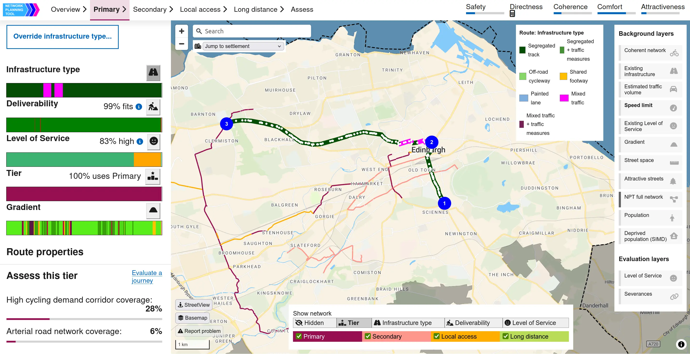
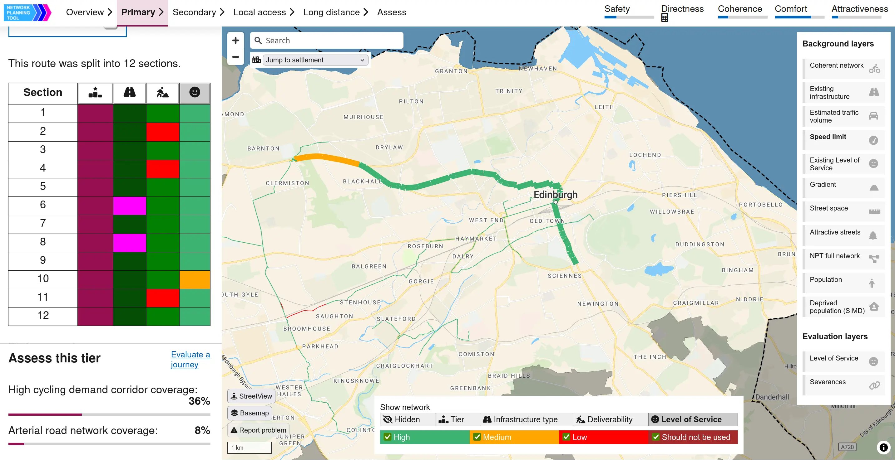
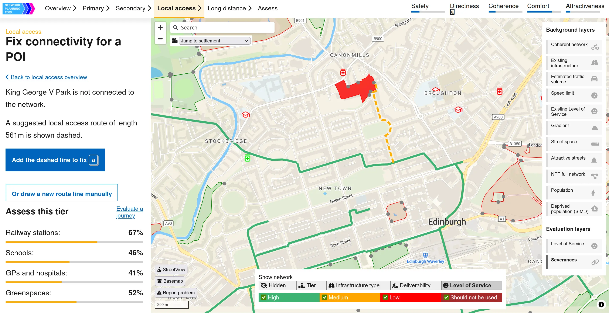
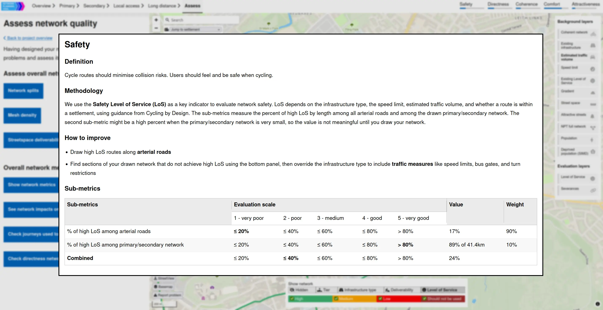
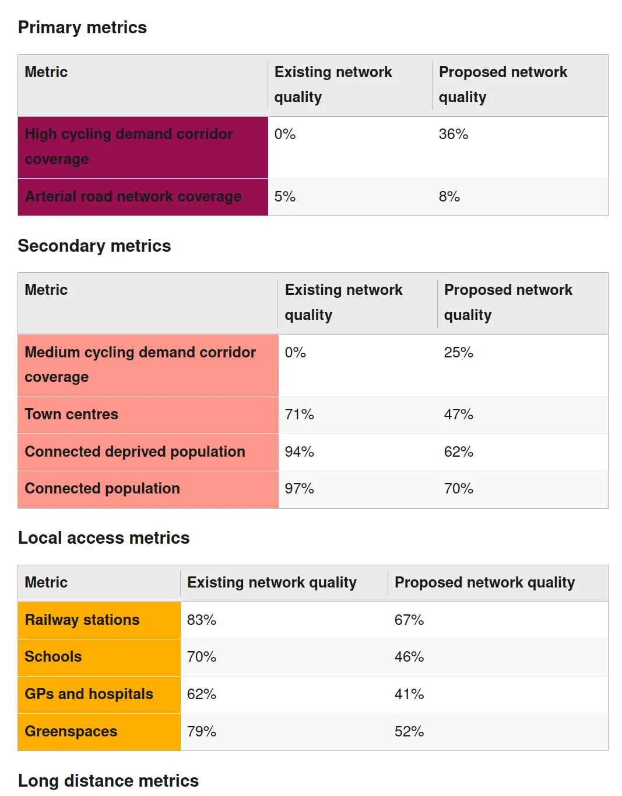
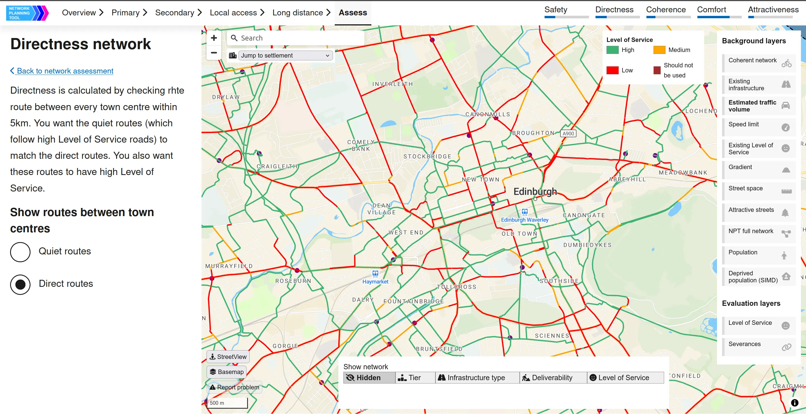

The Network Planning Workspace (NPW) is a web app for local authorities to
plan a cycle network. Users draw routes on the map to form the network,
starting from primary and secondary tiers that cover potential demand, and
then filling in local access connections and long-distance routes between
settlements. By looking at data on speed limit, traffic volume, and available
street width, NPW automatically picks an appropriate infrastructure type for
each section of a route. Users can address any constraints where a high Level
of Service cannot be achieved or where a street is too narrow to fit a
segregated cycletrack. As the network is built up, NPW displays a variety of
metrics to judge the performance of the network.

NPW exposes many contextual layers required for planning a cycle network.
The user draws a route by adding waypoints. NPW automatically picks an
appropriate infrastructure type.


Reviewing the sections along this route, NPW flags a high-speed road where a
segregated cycletrack is insufficient to achieve a high Level of Service
without further interventions.
Despite being close to the primary network, access to a park is severed by a
road with high traffic volume. NPW automatically recommends a route to
connect it.

Based on origin/destination data for commuting, school, and utility trips,
NPW calculates flow along the drawn network. Thick red and orange segments
show key connections with inadequate Level of Service, helping a user
prioritise filling in gaps. Evaluating the trips against the proposed
network takes only a few seconds in the browser.
Details about one network quality metric


A summary of changes to tier-specific metrics.
Most of the direct routes between town centres have poor Level of Service,
indicating areas for further work.

Working with the stakeholder
NPW was built for the
Sustrans mobility
team, funded by
Transport Scotland. The larger NPT project has been running for a few years with ITS Leeds data
science, and A/B Street Ltd joined in autumn 2024 to expand a static data
visualization tool into a first-of-kind interactive network planning tool. It
was very enjoyable working with Sustrans to turn the network quality metrics
-- safety, directness, coherence, comfort, and attractiveness -- into specific
quantifiable measurements that can be recalculated constantly.
CycleStreets Ltd
led the UX design, and together we transformed a swiss-army-knife tool into
carefully guided workflows using the
Scottish government design system. The initial feedback from local authorities has been incredibly detailed
and positive; with just cursory training on the tool, officers have built
reasonable network plans in an hour or two.
Status
The initial development phase is finished, and NPW is ready to use. It's
undergoing a further review process before launch. There are many ideas for
further polish and expanding its scope. Currently it's limited to Scotland,
but A/B Street Ltd is available to adapt it elsewhere.